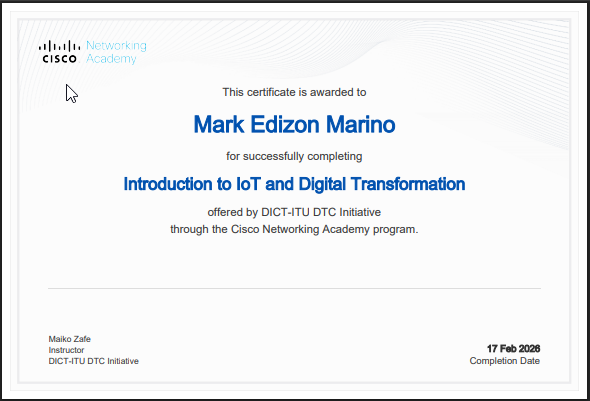
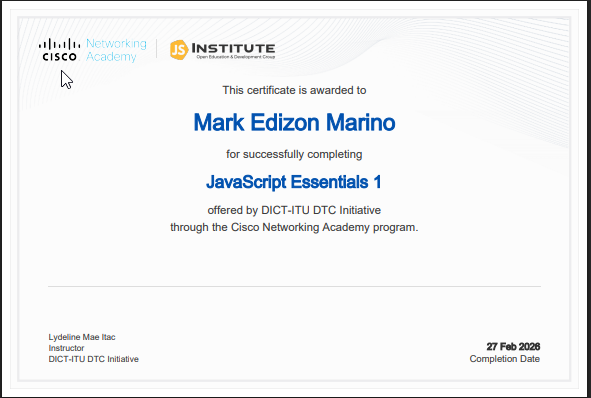
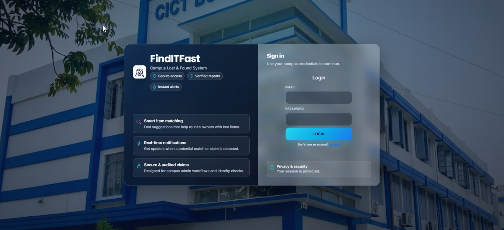

San Andres,Catanduanes, Philippines
I am an aspiring Web Developer, who builds useful app for community, government, and private companies. This Portfolio is part of my practice in fundamentals in HTML and CSS so i can familiarize myself with making the frontend. I am hoping that soon i can make an app from scratch without telling the AI to to things for me, instead, i'll use AI only as an Assistant.
I am currently a graduating student ins Catanduanes State University and still doing our internship at DICT Catanduanes. DICT helps me a lot on how to be good in speaking infront of a lot of people co'z they let us teach some students regarding some topics that's connected in IT World.
Why i chose IT? I chose this course co'z i was really curious on how does websites, apps, games, networks and technology works in the backend. I didn't have a background in coding so i was culture shocked for the first time our instructor teach us how to code. But eventually i learned, not so much but atleast i know the fundamentals of programming that let's me to enhance my knowledge about web development



A web Applications that allow the students to report a Lost or Found Items. The system also uses Machine Learning for processing the matched found items to a user's lost item.